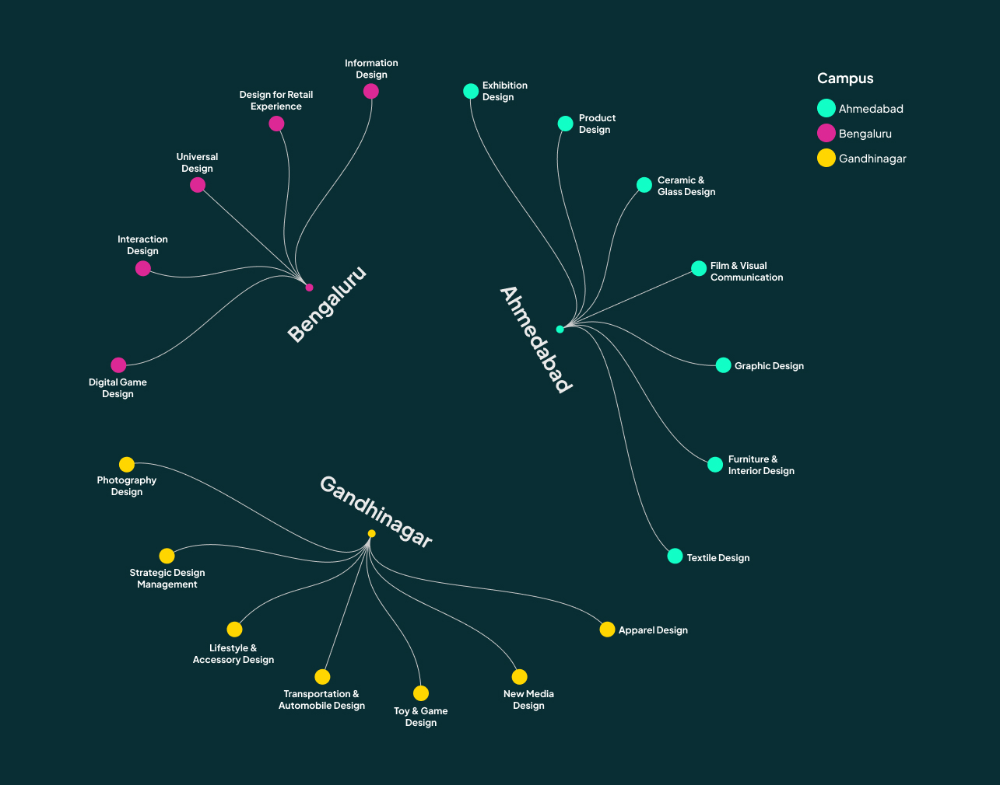
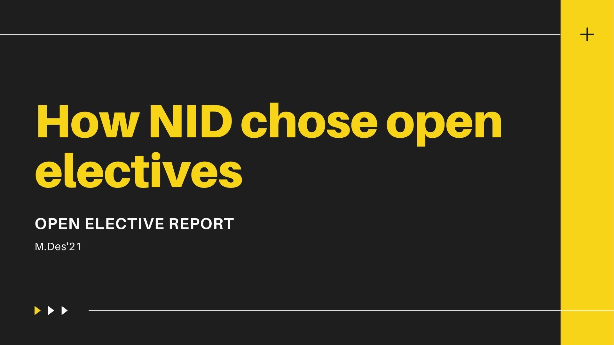
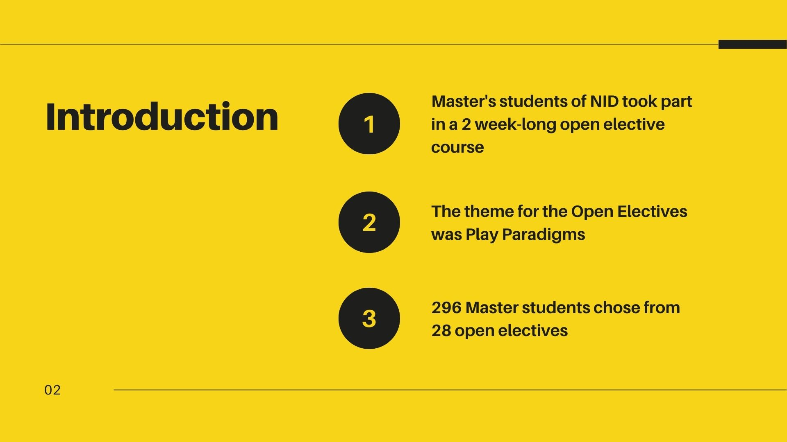
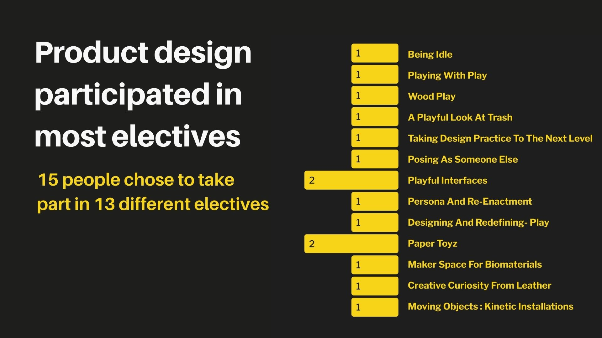
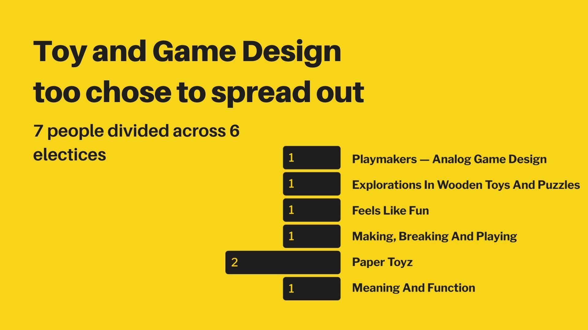
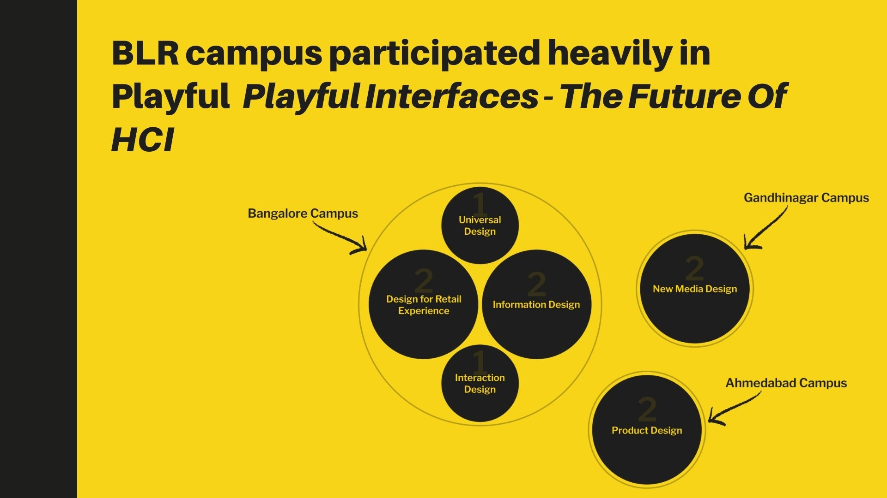
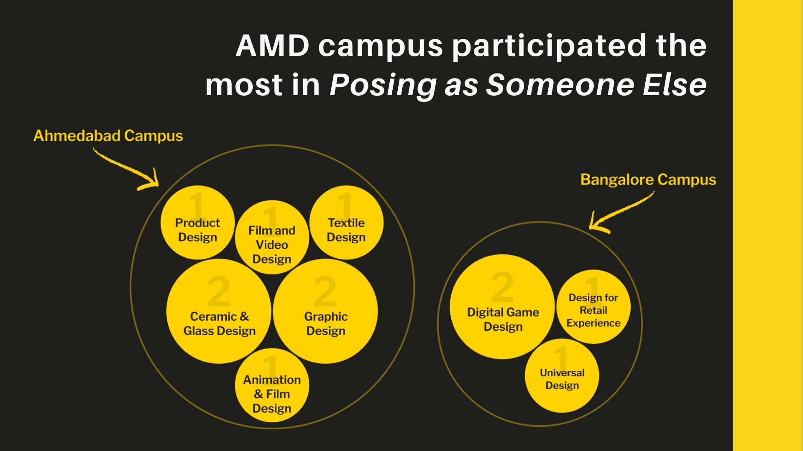
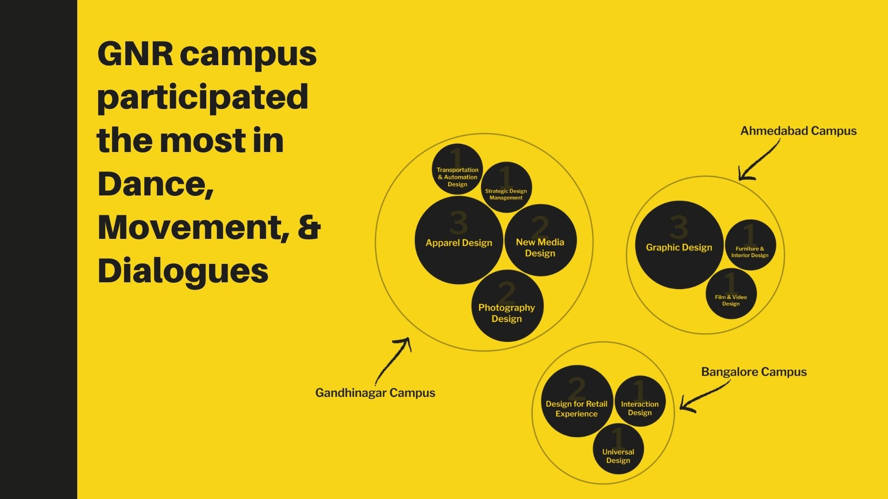
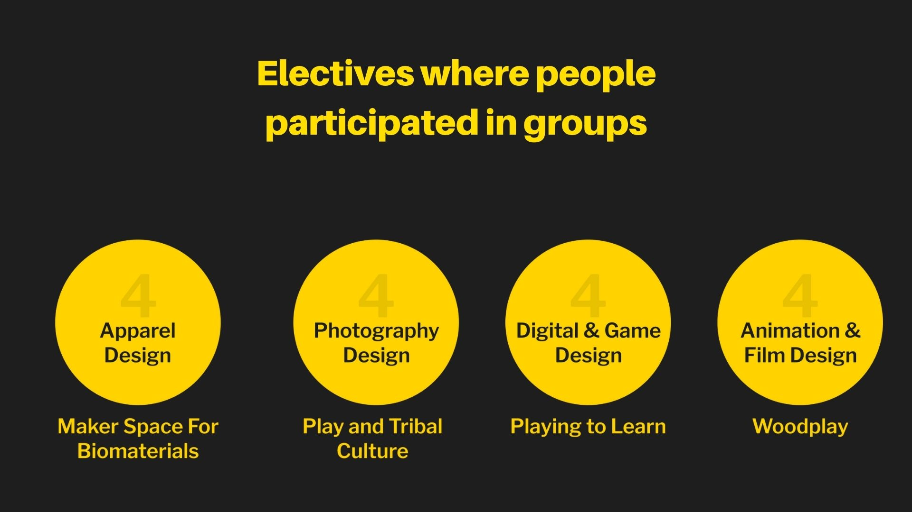

Using vedic mathematics for biometry scanning
MATHEMATICS, CLASSROOM PROJECT
Introduction
The Open Elective is a set of two-week long multidisciplinary workshops offered to the second year students of the Bachelor of Design (B.Des.) and the first-year students of the Master of Design (M.Des.) programmes across the three NID campuses in Ahmedabad, Gandhinagar and Bengaluru.
After attending the open elective, Aisa Math Karo, I got curious about how people chose these electives and tried
to create a data visualisation story around the program.
Some Context, NID has 3 Campuses, in Gandhinagar, Ahmedabad, & Bengaluru. Data viz. of the campus and the courses
they offer









